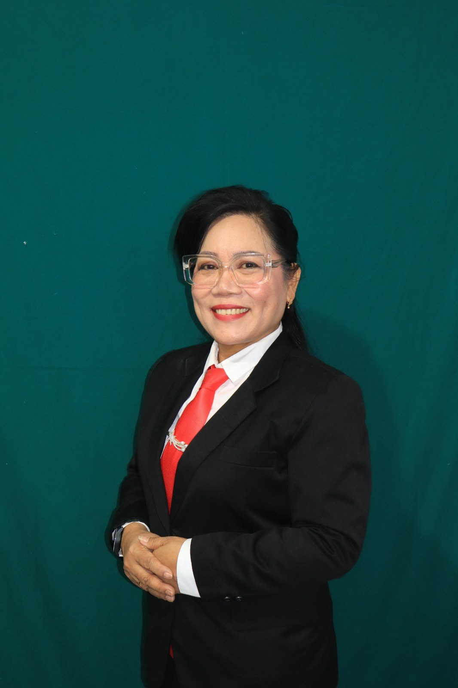

1997
01
Vikaris Pendeta
GMIM Sion Kuyanga, Wilayah Tombatu.
Melayani dengan iman, ketulusan, dan tanggung jawab.
Perjalanan pengabdian dalam pelayanan gerejawi, kepemimpinan jemaat, serta upaya membangun kerukunan umat beragama di Kabupaten Minahasa Selatan.

Pelayanan bukan sekadar jabatan, melainkan kesediaan untuk hadir, membimbing, dan bekerja bagi sesama.
Pdt. Dr. Stien Rondonuwu, M.Th. memiliki perjalanan pelayanan yang mencakup berbagai jemaat dan wilayah pelayanan GMIM. Pengabdian tersebut berlanjut dalam tanggung jawab pelayanan di tingkat sinode serta keterlibatan dalam organisasi kerukunan umat beragama.
Dalam perjalanan tersebut, beliau pernah mengemban tanggung jawab sebagai Ketua BPMJ, Wakil Ketua dan Sekretaris BPMW, serta Ketua BPMW. Di luar pelayanan gerejawi, beliau turut mengambil bagian dalam forum dan organisasi lintas umat beragama di Kabupaten Minahasa Selatan.
Profil ini merangkum perjalanan pelayanan dan pengalaman organisasi sebagaimana informasi yang disampaikan, sebagai dokumentasi pengabdian bagi gereja dan masyarakat.
Lihat kontribusi strategis →Catatan perjalanan pelayanan dari penugasan awal hingga tanggung jawab di lingkup Sinode GMIM.
GMIM Sion Kuyanga, Wilayah Tombatu.
GMIM Sion Kuyanga, Wilayah Tombatu.
Wilayah Belang.
Wilayah Tenga.
Wilayah Amurang 2.
Menjalankan tanggung jawab kepemimpinan di tingkat wilayah.
Mengemban tanggung jawab kesekretariatan pelayanan wilayah.
Wilayah Amurang 3.
Memimpin pelayanan di lingkup Wilayah Amurang 3.
Mengemban tanggung jawab pelayanan dalam lingkup Sinode GMIM.
Pengalaman dalam organisasi yang berfokus pada hubungan antarumat beragama dan kehidupan masyarakat.
Anggota Forum Kerukunan Umat Beragama Kabupaten Minahasa Selatan.
Ketua Forum Kerukunan Umat Beragama Kabupaten Minahasa Selatan.
Bendahara Badan Musyawarah Antar Umat Beragama.
Ketua BAMAG Minahasa Selatan.
Salah satu anggota penyusun Rencana Strategis (Renstra) GMIM Periode 2022–2027.
Untuk komunikasi, undangan, atau keperluan terkait pelayanan, silakan menghubungi melalui WhatsApp.